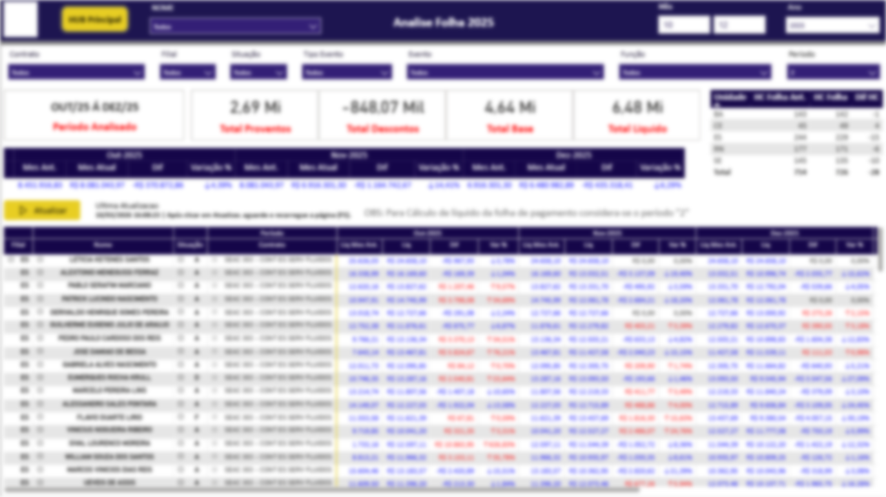

Analytics & BI
Modelagem, indicadores, auditorias, conciliações e visões executivas para apoiar decisão com base confiável.
Analytics Engineer e Fullstack Developer com foco em ERPs (TOTVS/SAP), T-SQL, Python, TypeScript e Power BI. Construo soluções que reduzem erro operacional, aceleram análise e aumentam controle.

Analytics Engineer & Fullstack Developer
Especialidade
Dados + Automação
Foco
Performance e controle
Stack
SQL • Python • TS
Entrega
Produto + BI
Sobre
Meu foco não é só construir dashboard bonito ou sistema funcional. É entregar solução útil, auditável, escalável e com impacto operacional de verdade.
Modelagem, indicadores, auditorias, conciliações e visões executivas para apoiar decisão com base confiável.
Desenvolvimento de portais, sistemas internos, gestores operacionais e interfaces com foco forte em UX.
Scripts, integrações e fluxos que eliminam retrabalho, aumentam velocidade e reduzem erro humano.
Projetos
Alguns exemplos de soluções voltadas para auditoria, produtividade e automação de processos.

Case corporativo
Pipeline SQL para conciliação automática de valores, divergências e batidas, apoiando análises críticas de folha e redução de inconsistências operacionais.
Gestor de produtividade em TypeScript, com foco em organização operacional, UX consistente e estrutura preparada para evolução do produto.
Uso estratégico de IA para acelerar extração, análise, scraping e apoio ao desenvolvimento, reduzindo esforço manual e ganhando velocidade nas entregas.